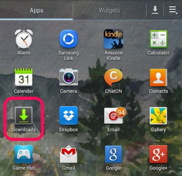

How can I share the Estante app with a friend?
Requirements
- You and your friend both need to have a way to connect. You can use Bluetooth, Wi-Fi Direct, or Wi-Fi.
- You must have the Estante installer package. This is the file that you downloaded when you got your Estante. This file name ends in .apk. This file can usually be found in your “downloads” folder.
Instructions
- After you find the Estante installer package, tap the check box next to the file.
- Find the share icon and tap on it.
- From the list, choose the method you prefer and follow your device’s instructions.
Instructions with images.
- Tap on your Apps icon to get to the Apps page, then find and select your Downloads folder.

- After you find the Estante installer package, tap the check box next to the file.
- Find the share icon and tap on it.
- From the list, choose the method you prefer and follow your device’s instructions.